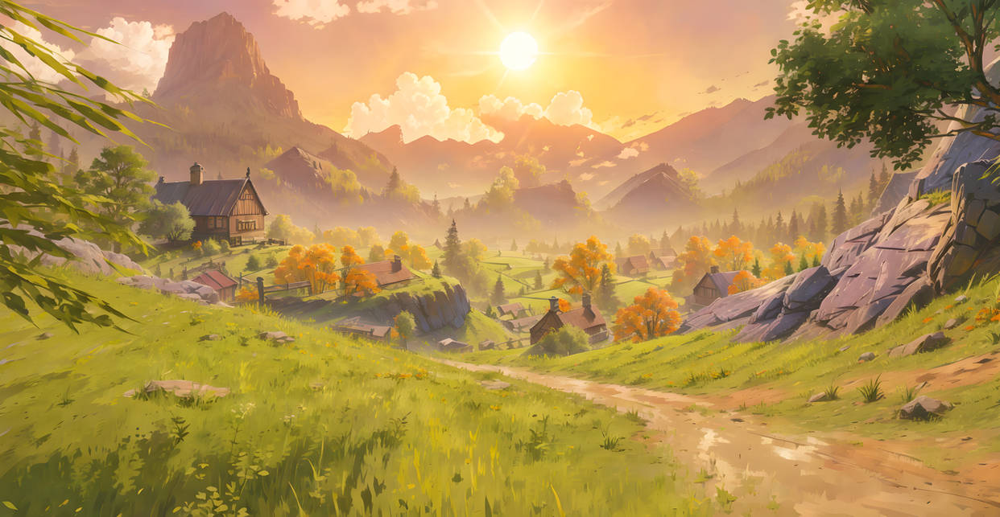

legal que até agora ta tudo dando certo, proximo ano ja estou trabalhando com isso
segue imagens belas de coisas belas 😼
legal que ele leu minha mente e vai mostrar como pega a imagem de outra pasta
para imagens externas é so tacar o link da imagem na tag
para deixar o site mais rapido e com mais visibilidade é importante deixar os arquivos com tamanho pequeno, e não só diminuir o tamanho com css
depois tenho que lembrar como quebrar varias linha de paragrafo
